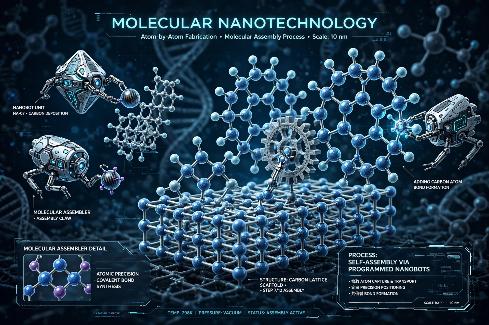

Molecular nanotechnology (MNT) is a technology based on the ability to build structures to complex, atomic specifications by means of mechanosynthesis. It is distinguished from nanoscale materials. Based on Richard Feynman's vision of miniature factories using nanomachines to build complex products, MNT was developed and popularized by K. Eric Drexler in his 1986 book Engines of Creation.

| Molecular nanotechnology | |
|---|---|
| Key figure | K. Eric Drexler |
| Key work | Engines of Creation (1986), Nanosystems (1992) |
| Related | Nanotechnology, molecular assembler, grey goo |
Proponents envision molecular assemblers capable of building materials and devices with atomic precision, enabling extremely strong lightweight materials, advanced computing, medical nanorobots, and cheap manufacturing. Drexler's technical work Nanosystems analyzed such designs using physics and chemistry.
Richard Smalley and others argued that mechanosynthesis faces fundamental obstacles — the "fat fingers" and "sticky fingers" problems — and that chemistry in solution differs from mechanical assembly. Drexler responded that enzyme-like and later positional assembly approaches avoid these objections. Most current nanotechnology research focuses on nanoparticles and materials rather than assemblers.
The hypothetical grey goo scenario involves self-replicating nanomachines consuming matter. Drexler later downplayed accidental self-replication risks, emphasizing deliberate misuse instead.